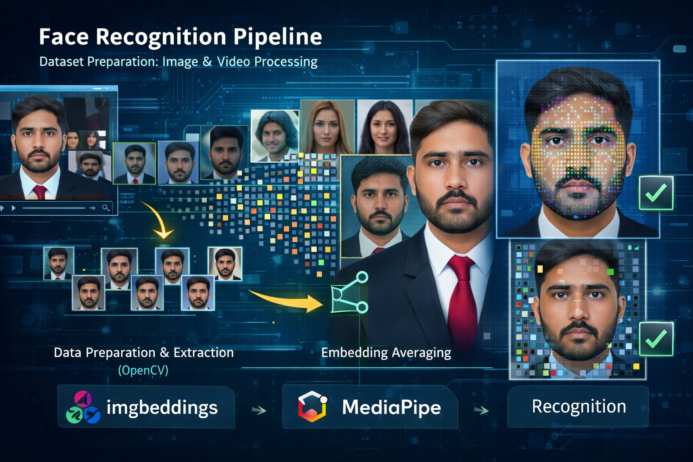
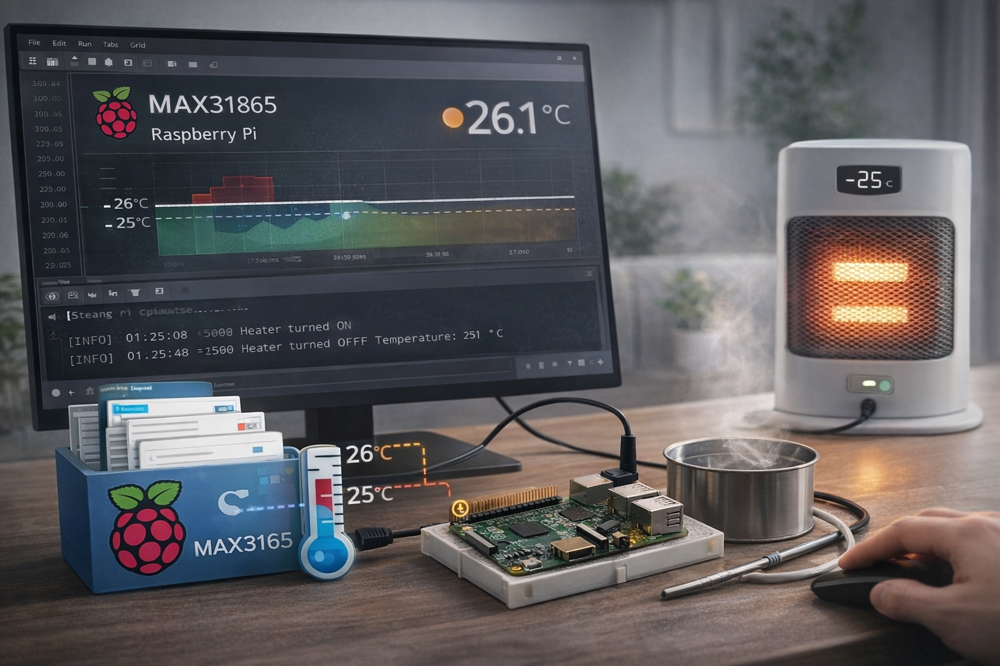

Projects
A selection of projects across embedded systems, data engineering, and applied AI.

Face Recognition Pipeline (Dataset Preparation, Image & Video Processing)
Built an end-to-end face recognition system combining embedding-based and landmark/mesh-based approaches.
I created a custom dataset by extracting image frames from the NVIDIA “Avatar Fingerprinting” video dataset
and organizing them per identity. Using OpenCV, I automated frame extraction and preprocessing, generated
per-frame feature embeddings, and averaged them to create a stable identity embedding per person. Recognition
was then performed by matching query faces (from images or video streams) against the stored identity embeddings.
In parallel, I implemented an alternative recognition method using MediaPipe Face Mesh to evaluate mesh-based
features under pose and illumination variations.

Desktop Image Editor & Bluetooth Transfer to ESP32-S3
Built a Python desktop application that loads and edits images and transmits them wirelessly
over Bluetooth to an ESP32-S3 device. The tool supports core image operations such as cropping,
resizing, RGB conversion, zooming, combining images, and overlay composition—designed for a smooth
operator workflow and reliable embedded-side transfer.
Automated Weather Data Pipeline (OpenWeatherMap + Selenium + Docker)
Developed an automated data pipeline that retrieves weather metrics (e.g., min/max temperature,
humidity, cloud coverage, wind speed) using the OpenWeatherMap API. The pipeline takes latitude
and longitude as input, resolves location context, stores results into structured CSV files, and
runs on a scheduled cycle every 60 minutes. The full workflow is containerized for portable,
reproducible deployment.

HOQA Temperature Control System (Raspberry Pi + MAX31865)
Implemented a closed-loop temperature control system using a MAX31865 RTD sensor with a Raspberry Pi.
The controller monitors temperature continuously and automatically toggles a heater using configurable
thresholds (hysteresis) to maintain a stable operating range—improving safety and preventing frequent
switching.

Railway Track Fault Detection (Ultrasonic Signals → CNN Classification)
Worked on an end-to-end workflow for railway fault detection using ultrasonic inspection data.
The project covered data acquisition, preprocessing and visualization to validate signal quality,
conversion of processed measurements into image representations, and training of CNN-based
classifiers for automated defect/state classification.

LLM-Assisted Literature Survey Automation (Face De-identification)
Designed and automated a literature survey pipeline focused on face de-identification research.
The workflow aggregates results from IEEE, ACM, and ScienceDirect, normalizes records into a unified
dataset, removes duplicates, and applies an AI-assisted filtering pipeline to rank and extract the
most relevant work. The process reduced ~8,000 papers to a shortlist of 24 highly relevant studies.